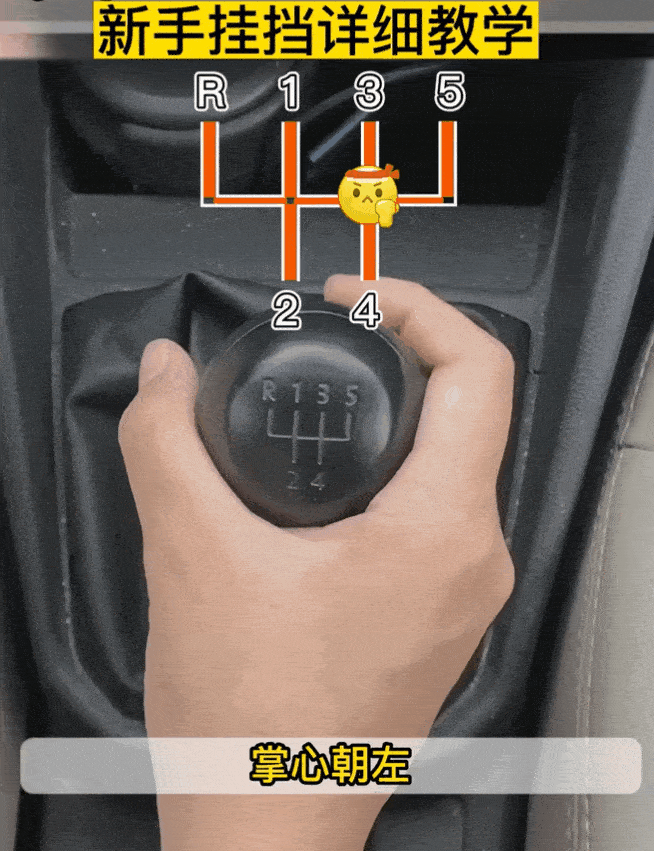
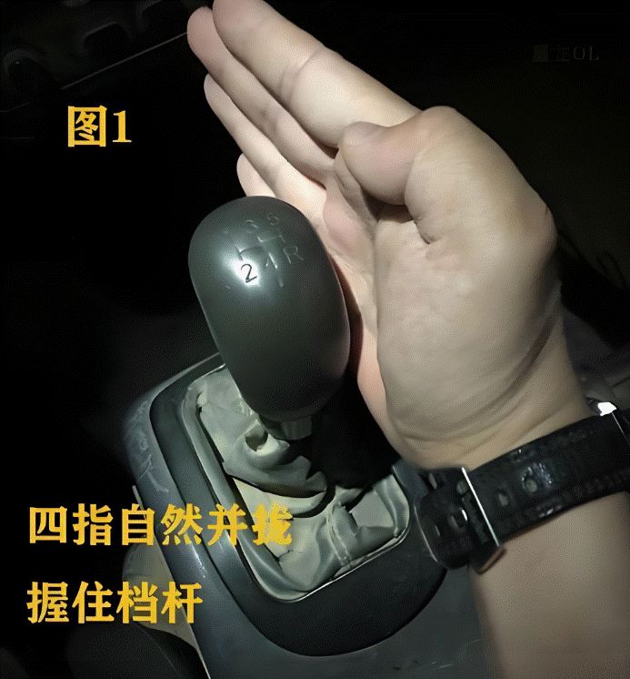
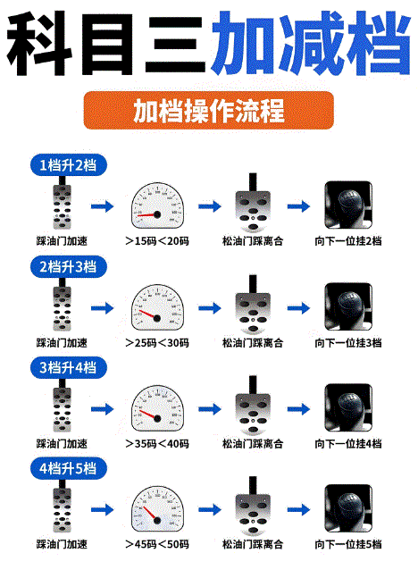

科目三加减挡操作全攻略！
科目三加减挡，简直是驾考界的‘拦路虎’！
多少人在这里栽了跟头，多少人在这里出错到怀疑人生。
你是不是也曾在换挡时手忙脚乱，低头看挡挂错挡？
别慌，今天这篇攻略就是你的‘驾考救星’，带你从‘换挡小白’变身‘换挡大神’，一次过关不是梦！
注意，在操作的时候，绝对不能低头看挡，因为这样做很危险。
为什么会低头看挡呢？
很大原因是对于挡位的布局不熟悉，找不到挡位
其实这种情况是正常的，但是一定要解决这个问题，你在刚开始练车的时候 ，可以把车停到那熄火状态下，看着你的挂挡杆去操作
挂挡的手法是：
手心向左靠大腿，靠住它前一后二
手心向下放上方，横平竖直，前三后四
先看着它，按照正常的手法去操作，然后目视前方不看它，你能不能准确的1234，4321每个挡位在什么位置，能不能换对

你说这些我都知道，只是说开车的时候，我不知道现在是几挡，所以会下意识的看一下挂挡杆，然后好操作呀？
记住了：不知道几挡先回空挡，因为空挡是中心的位置，挂挡杆在空挡的前提下，可以直接推想换的挡位，在换挡时，不管是几挡，先回空挡。
明明是按照正常的操作手法去做的，怎么就换不上档呢
吃奶的劲都使出来了，这个挂挡杆就是推不动啊，越着急越推不动，结果下意识的低头看了一下就挂了
换不上档的主要原因是：
离合器没踩或者踩了，但是没踩到底没踩到位，有可能是操作流程出现了问题
加挡的时候，先加油速度提上去了松开油门，踩离合，离合器踩到底了，手再松开方向盘去换挡
而学员在操作时，换挡下意识手会松开方向盘，直接去推挂挡杆
这时离合器有可能根本就没踩，或者踩了踩了一半的时候脚就不动了，会误以为离合器踩到底了，实际上这个时候是因为手上的动作把挡摘下来了
有的时候不踩离合，能把挡摘下来，但是当再去往上推的时候，很难推上，那反馈的信息，就有可能造成误操作，会形成一种错觉，离合器踩到底了，实际上还没到位
要是连踩离合的意识都没有，就直接去换挡，那也是没办法的事，换不上档是正常的
解决问题的方法很简单
换挡的时候切记，无论是加档还是减档，必须确保左脚离合器踩到底了，踩不动了手再松开方向盘去摸挂挡杆，这样能避免挂不上档，甚至挂错都可以解决
跑偏的第一种情况：
正常行驶不换挡的前提，下车开得很平稳；
加档减档操作，右手松开方向盘时，左手会不自觉的拽方向盘，下意识的用力，会导致车辆跑偏，甚至在路面上‘蛇形走位’

解决方法是
双手一定是放松的前提下去操作，捏太紧很容易把方向盘‘薅下来’
尽量把车拉直摆正，然后双手放松的前提下换挡，此时车辆就不容易跑偏
跑偏的第二种情况：
加档减档的时候要结合车速，在观察仪表盘时，没有做到短平快，光顾着瞅方向盘了，车身偏了都不知道
怎么解决
看的时候一定是眼睛余光快速的扫一下，然后正常目视前方，短暂的，快速的余光扫一下仪表盘上的车辆行驶速度表，这样才是正确的
换挡很忙的人，一会儿手上动作，一会儿脚上的动作，协调不好就会出现慌乱的情况，那这种前提下出现状况太正常了
解决方法很简单
加挡是有步骤的，是有固定的操作流程的，
加挡先加油，速度提上去了，油门松开离合器踩到底，然后右手松开方向盘去切换档位，缓松离合脚放旁边的前提下，适当的给油
一句话概括：一加一松一离合，一换一抬一油门
减挡的时候先把油门松开，观察一下车的速度，如果速度过高，先踩刹车降速，然后松开刹车踩离合换挡；如果速度不高，直接踩离合降挡

换挡时机不对，你车速还没上来就急着加挡，结果车“喘”得像头老牛。
原因：
对车速和挡位的匹配关系不熟悉，换挡时过于急躁，没等车速上来就换挡。
解决方案：
记住车速挡位匹配表
1挡：0-20km/h
2挡：5-30km/h
3挡：15-40km/h
4挡：25-60km/h
这是各档位正常行驶时，正确的速度范围，但是加挡时你要注意
逢五加挡
一挡换二挡15左右
二挡换三挡25左右
三挡换4挡35左右
减挡时逢0减挡
四挡减三挡30左右
三挡减二挡20左右
二挡减一挡10左右
总结一下
科目三加减挡，看似是技术活，其实是心态活。只要你掌握了技巧，保持冷静，换挡就像吃饭喝水一样简单。
记住：车是你的伙伴，不是你的对手。与其紧张到手脚发抖，不如放松心情，享受驾驶的乐趣。
END